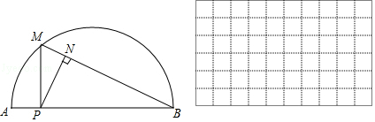

2017年北京市中考数学试题 · 数学解答题 第26题
26．（5分）如图，P是AB所对弦AB上一动点，过点P作PM⊥AB交AB于点M，连接MB，过点P作PN⊥MB于点N．已知AB=6cm，设A、P两点间的距离为xcm，P、N两点间的距离为ycm．（当点P与点A或点B重合时，y的值为0）

小东根据学习函数的经验，对函数y随自变量x的变化而变化的规律进行了探究．
下面是小东的探究过程，请补充完整：
（1）通过取点、画图、测量，得到了x与y的几组值，如下表：
x/cm | 0 | 1 | 2 | 3 | 4 | 5 | 6 |
y/cm | 0 | 2.0 | 2.3 | 2.1 | | 0.9 | 0 |
（说明：补全表格时相关数值保留一位小数）
（2）建立平面直角坐标系，描出以补全后的表中各对对应值为坐标的点，画出该函数的图象．
（3）结合画出的函数图象，解决问题：当△PAN为等腰三角形时，AP的长度约为 cm．